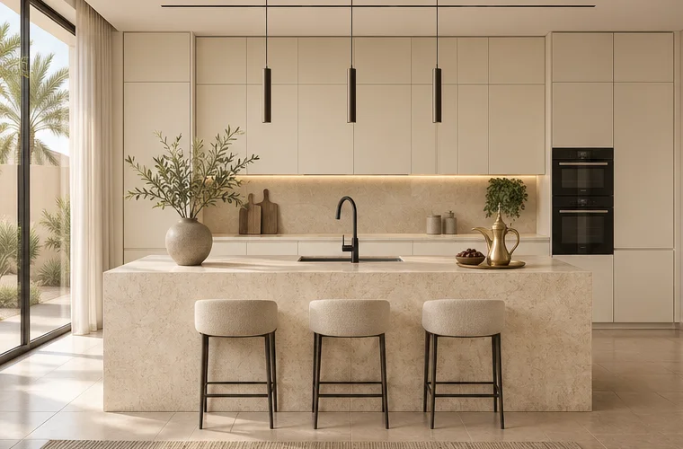
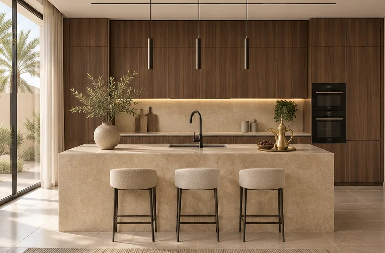

عاجي وحجر رملي
- الواجهات
- واجهات عاجية مطفية
- سطح العمل
- سطح بدرجة الرمل
درجتان فاتحتان، إحداهما أدفأ من الأخرى. ضع عينتي الواجهة والسطح بجانب الأرضية لترى الفرق بينهما في ضوء مطبخك.
استوديو الخامات
شاهد المطبخ نفسه بأربع مجموعات من ألوان الواجهات والأسطح. اعرض مجموعتين جنبًا إلى جنب، وأضف إلى طلبك ما يعجبك.

درجتان فاتحتان، إحداهما أدفأ من الأخرى. ضع عينتي الواجهة والسطح بجانب الأرضية لترى الفرق بينهما في ضوء مطبخك.

الصور للمقارنة بين الألوان. اعتمد الدرجة النهائية بعد مشاهدة عيّنة الخامة في إضاءة مطبخك.